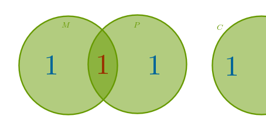

3.1) Addition
3.2) Inclusion Exclusion
3.3) Multiplication
3.4) Subtraction
3.5) Division
The five basic counting principles are based on the ideas of growth and reduction. The Addition, Inclusion Exclusion, and Multiplication Counting Principles cover growth while the Subtraction and Division Counting Principles cover reduction.
Before we deep dive into counting principles let us stop and ponder - exactly what Combinatorial Analysis is? In other words why do we need these counting principles in the first place? In very very broad strokes, at the introductory level, Combinatorial Analysis is a discipline that studies arrangements of a finite number of discrete items with the goal of answering the following questions:
1) Is it even possible to construct the given arrangements?
2) If so then what is their number and what are they (list them all)?
3) What are their properties?
4) Is it possible to optimize them - come up with the "best" arrangement?
In this tutorial we will automatically assume that the answer to the first question is always "yes". We will ignore the questions three and four. We will mostly look at the first part of the second question - how many given arrangements are possible and that is where the basic counting principles enter the picture - they help us count. At one extreme we may even compress this entire tutorial into just one word - count!
We will quickly discover that while the combinatorial formulas are good at producing the number of possible arrangements, they leave us in the dark when it comes to generating an exhaustive list of these arrangements.
We may even draw a parallel here with the Method of Mathematical Induction which can be used to prove some formula but does not reveal the path to discovery of where did the formula come from to begin with.
We can also find a similarity with the Pigeonhole Principle - it tells us that at least one bucket must contain more than one item but it does not reveal - exactly which bucket is it and exactly how many items are in it?
In any case, while deducing the formulas we will, here and there, do the unthinkable - generate the arrangements on paper by hand. There are efficient, machine-ready algorithms to do just that - but you can study those on your own.
Where appropriate we will formulate a principle in simple everyday terms and in a formal way using the sets notation. If we treat each possible arrangement that satisfies the requirements of a given problem as a subset - an item of a larger set then we can formalize the answer to the question "how many?" in terms of the size of that larger set.
3.1) Addition Counting Principle (ACP)
Simply:
if an item can be selected from one collection in \(m\) ways and an item can be selected from a different collection in \(n\) ways then one item can be selected from either collection in \(m + n\) ways
ACP can be generalized for any finite number of collections. Formally verbally:
the number of items in a union of pairwise disjoint sets is the sum of the number of items in each of the sets
Formally symbolically:
if a set \(S\) is partitioned into a finite number of \(n\) subsets \(S_1, S_2, \dots , S_n\) disjoint pairwise then the total number of items in \(S\) is equal to the sum of item counts in each subset \(S_j, j = 1, 2, \dots , n\):
$$|S| = \Big|\bigcup_{j=1}^n S_j \Big| = |S_1| + |S_2| + \dots + |S_n| = \sum_{j=1}^n |S_j|$$The "disjoint pairwise" requirement is formalized as above and is of paramount importance - if it is not met then ACP does not apply and a similar but different and more generic - Inclusion Exclusion Counting Principle must be used.
Example E1
A bookcase contains \(1\) book on math, \(1\) on physics and \(1\) on computer science. How many books are in this bookcase or, equivalently, in how many different ways can we choose which book to read first?
Break the whole (bookcase) into \(n = 3\) sets \(M\) for Math, \(P\) for Physics, and \(C\) for compsci:
$$|M| = 1, \; |P| = 1, \; |C| = 1$$Since all the sets are disjoint pairwise:
the answer is:
$$n = |M| + |P| + |C| = 1 + 1 + 1 = 3$$
3.2) Inclusion Exclusion Counting Principle (IECP)
Let us assume that in E1 there is also a book on the subject of Equations of Mathematical Physics. How many books are in the bookcase now?
If we attempt to solve this problem in exactly the same way as above we will obtain the following. When counting the books on math we surely will count the book on Equations of Mathematical Physics. After all, the word "Mathematical" in the book's title obliges:
$$|M| = 2$$When counting the books on physics we surely will count the book on Equations of Mathematical Physics. After all, the word "Physics" in the book's title obliges:
$$|P| = 2$$Lastly:
$$|C| = 1$$If we apply ACP to this problem then we have:
$$n = |M| + |P| + |C| = 2 + 2 + 1 = 5$$However, if we count the books by hand, without any combinatorial principles, we are sure to come up with a number: $$n = 4$$
What gives?
Upon closer examination we realize that we have counted the book on Equations of Mathematical Physics twice! We are being too generous, too inclusive - we are overcounting. The reason for this overcounting is the fact that the sets \(M\) and \(P\) are not disjoint any more - their intersection is not an empty set. It follows then that to compensate for overcounting we must subtract or exclude the size of the intersection of \(M\) and \(P\) from the total:
For two sets then the Inclusion Exclusion Counting Principle, formulaically, states that:
$$|S_1 \cup S_2| = |S_1| + |S_2| - |S_1 \cap S_2|$$and the theoretical answer to the current problem then agrees with the fact:
$$|M| + |P| - |M \cap P| = 2 + 2 - 1 = 3$$ $$n = 3 + |C| = 3 + 1 = 4$$What if there is also a book on Numerical Methods in the bookcase? This book covers the methods, among others, of numerical estimates of non-cooperating integrals which do not have a closed form expression. Such a book surely is a book on math and a book on compsci also:
$$|M| = 3, \; |P| = 2, \; |C| = 2$$ $$|M \cap C| = 1$$or graphically:
and we hope that we obtain the symbolic form of IECP for three sets:
$$n = |M| + |P| + |C| - |M \cap P| - |M \cap C| = 3 + 2 + 2 - 1 - 1 = 5$$Or do we?
What if there is also a book titled "Physics on a Computer, Modelling". In this book we investigate the ways to write a software program to trace a trajectory of a point mass thrown under an angle to a horizon with a certain initial velocity. Such a book then belongs to \(P\) and \(C\):
$$|M| = 3, \; |P| = 3, \; |C| = 3$$ $$|P \cap C| = 1$$or graphically:
and now we are done with IECP for three sets:
$$n = |M| + |P| + |C| - |M \cap P| - |M \cap C| - |P \cap C| =$$ $$3 + 3 + 3 - 1 - 1 - 1 = 6$$Or are we?
What if there is also a book on Computational Physics? Such a book must belong to all three sets:
$$|M| = 4, \; |P| = 4, \; |C| = 4$$ $$|M \cap P| = 2, \; |P \cap C| = 2, \; |M \cap C| = 2$$ $$|M \cap P \cap C| = 1$$or graphically:
Are we done now?
$$n_t = |M| + |P| + |C| - |M \cap P| - |M \cap C| - |P \cap C| - |M \cap P \cap C| =$$ $$4 + 4 + 4 - 2 - 2 - 2 - 1= 5$$Hm. What is wrong? Surely there must be:
$$n_p = 7$$books in the bookcase now. We have started with \(3\) books in E1 and added just four books:
$$n_p = 3 + 4 = 7 \neq 5 = n_t$$Out theoretical result, \(n_t\), does not agree with its practical counterpart, \(n_p\).
Upon closer examination we observe that just like in our initial \(4-\)book attempt we have committed a counting crime. Only this time instead of overcounting we have undercounted something. To figure out what is going on here we consider the item that belongs to all three sets at once.
We observe that at first, by including that common item in the total size of each set, we have counted it:
$$1 + 1 + 1 = 1 \times 3 = 3$$times.
During the subtraction, however, we have excluded that common item once for each of the three pairs of intersections or:
$$-1 -1 -1 = -1 \times 3 = -3$$times.
Between these two phases of counting we wound up not counting the item common to all three sets at all:
$$3 - 3 = 0$$And, to add an insult to an injury, we then subtracted the size of the intersection common to all three sets from the total. That was our mistake.
It follows then that for three sets IECP has the following symbolic form:
$$n = |M| + |P| + |C| - |M \cap P| - |P \cap C| - |M \cap C| + |M \cap P \cap C| =$$ $$4 + 4 + 4 - 2 - 2 - 2 + 1 = 7$$We now put forward a hypothesis that for an arbitrary finite number of sets the following pattern always holds:
we overcount the items in the intersections of an even number of sets while undercounting the items in the intersections of an odd number of sets
Consider four sets, for example. Recalling our procedure to make indistinguishable items unique (section 2.4) let us number the sets or circles in a clockwise fashion:
$$1, 2, 3, 4$$To make each item, \(1\), unique we assign to it a subscript which we construct as a list of all the circles that this particular item belongs to:
You are encouraged to go though the following exercise for other items while we shall look at the item common to all four sets:
$$1_{1,2,3,4}$$We will count that item four times as part of the overall size of each of four sets:
$$1 + 1 + 1 + 1 = 1 \times 4 = 4$$Next we will count it four times for each of four intersections of pairs of sets comprised of immediate neighbors in the drawing:
$$S_1 \cap S_2$$ $$S_2 \cap S_3$$ $$S_3 \cap S_4$$ $$S_4 \cap S_1$$And then we will count it twice for each one of two intersection of pairs of sets comprised of "diagonal" neighbors in the drawing:
$$S_1 \cap S_3$$ $$S_2 \cap S_4$$Since we subtract the last two numbers from the running total, for the item \(1_{1,2,3,4}\) we have:
$$4 - 4 - 2 = -2$$Lastly, we will count that item four more times - once for each intersection of three sets:
$$S_1 \cap S_2 \cap S_3$$ $$S_2 \cap S_3 \cap S_4$$ $$S_3 \cap S_4 \cap S_1$$ $$S_4 \cap S_1 \cap S_2$$bringing the running total to:
$$-2 + 4 = 2$$To compensate for this overcounting we have to subtract the size of the above \(4-\)intersection from the total.
We now see that to compute the size of a union of an arbitrary finite number of sets we:
- include the size of each set
- exclude the size of \(2-\)intersections
- include the size of \(3-\)intersections
- and so on until the \(n-\)intersection is reached. If \(n\) is even then exclude and if \(n\) is odd then include the size of the corresponding intersection:
$$\Big|\bigcup_{i=1}^n S_i \Big| = \sum_{i=1}^n |S_i| - \sum_{1 \leqslant i < j \leqslant n} |S_i \cap S_j| + \sum_{1 \leqslant i < j < k \leqslant n} |S_i \cap S_j \cap S_k| - \dots + (-1)^{n-1}|S_1 \cap \dots \cap S_n|$$or, more compactly, according to IECP:
$$\Big|\bigcup_{i=1}^n S_i \Big| = \sum_{i=1}^n (-1)^{i+1} \sum_{1 \leqslant j_1 < \dots < j_i \leqslant n} |S_{j_1} \cap \dots \cap S_{j_i}|$$
3.3) Multiplication Counting Principle (MCP)
This principle is a consequence of ACP since for integers repetitive addition is multiplication.
Simply for two events:
if the first event has \(m\) outcomes and, regardless of the outcome of the first event, the second event has \(n\) outcomes then both events occurring in that sequence have a total of \(m \times n\) outcomes
Formally verbally:
the number of items in a union of \(m\) pairwise disjoint sets each of which has \(n\) items is \(m \times n\)
Formally symbolically for two sets:
let \(S_1\) be a set of items \(a_j, j = 1, \dots , |S_1| = m\) and let \(S_2\) be a set of items \(b_k, k = 1, \dots , |S_2| = n\). Assume that for each choice of item \(a_j\) from \(S_1\) there are \(n\) choices of items \(b_k\) from \(S_2\). If \(S\) is a set of ordered pairs \((a_j, b_k)\) then the number of items in \(S\) is \(m \times n\):
$$|S| = |S_1| \times |S_2| = m \times n$$An ordered pair of items \((a, b)\) is a formation (collection) of two items whose order is specified. Obviously in this case order matters. We can use the same aggregate comparison procedure to compare two ordered pairs so technically \((a, b)\) and \((b, a)\) are different. Further, from the perspective of wholesome comparison, meaning "as wholesome items", these two ordered pairs are different:
$$(a_1, b_1) \neq (a_1, b_2)$$Recall our earlier aggregate comparison discussion - even though the sizes of the above collections are the same their content is different.
Now instead of viewing \(S\) as a set of ordered pairs let us partition it into some number of pairwise disjoint subsets whose items are still ordered pairs but these pairs are constructed in such a way that \(a_j\) in each pair is always placed first while the choices for \(b_k\) run their natural course:
$$S_j = \{(a_j, b_1), (a_j, b_2), \dots , (a_j, b_n)\}$$Since in the above pairs the choice of \(a_j\) remains fixed for any pair, it follows that the number of such pairs, or items in a subset, will be equal to the number of choices for \(b_k\) of which there are \(n\) in total:
$$|S_j| = n$$How many of these types of subsets will there be? Since the only item that will change from subset to subset is \(a_j\), it follows that the total number of these types of subsets must be equal to the number of choices for \(a_j\) of which there \(m\) in total.
We can now apply ACP to all the subsets \(S_j\) where \(j\) runs from \(1\) to \(m\):
$$|S| = \sum_{j=1}^m |S_j| = \underbrace{n + n + \dots + n}_{m} = m \times n$$
Example E2
In a library there are several large bays - floor sections filled with some number of bookcases. Preparing the library's quick reference guide for the incoming students, we want to label each bay with a capital letter followed by one digit. We settle on the letters \(A, B, C, D\) and digits \(1, 2, 3\). How many bays can be uniquely labeled?
In this case we have:
$$S_1 = \{A, B, C, D\}$$ $$S_2 = \{1, 2, 3\}$$We observe that for each current choice of a letter - regardless of the previously made choices - there are \(|S_2| = 3\) choices for a digit. The choices for \(A\) are:
$$\{(A, 1), (A, 2), (A, 3)\}$$The choices for \(B\) are:
$$\{(B, 1), (B, 2), (B, 3)\}$$and so on. We can now construct our set \(S\) of ordered pairs \((a_j, b_k)\):
$$S = \{\{A1, A2, A3\}, \{B1, B2, B3\}, \{C1, C2, C3\}, \{D1, D2, D3\}\}$$where we have partitioned \(S\) into pairwise disjoint subsets and skipped the parenthesis for ordered pairs. Based on MCP we reason that we can label:
$$|S| = |S_1| \times |S_2| = 4 \times 3 = 12$$bays.
Note here that for demonstration purposes we may rearrange \(S\) in a form of a table - a two-dimensional matrix - whose rows are driven by letters and whose columns are driven by digits:
$$A1 A2 A3$$ $$B1 B2 B3$$ $$C1 C2 C3$$ $$D1 D2 D3$$We have omitted all the delimiters here. We see that we have \(4 = |S_1|\) rows and \(3 = |S_2|\) columns in the table for a total of \(12\) ordered pairs.
Recall that for ACP to be applicable the "pairwise disjoint" requirement must stand. For MCP to be applicable the "independence" requirement must stand:
the number of current choices can not depend on the previously made choices
The above requirement is of paramount importance for MCP.
If during a solution of a problem we find ourselves saying "... number of choices of so and so depends on what was chosen before ..." then MCP is not applicable in this particular chain of reasoning - it may still be applicable in a given problem if it is possible to find a way to rejigger the situation so that the choices do become "independent", see E7.
In the above matrix this independence requirement is packed into "for every letter there are \(m\) digits to choose from" requirement.
Based on the above demonstration it is possible to rephrase MCP as follows:
if \(S_1\) is a set of items \(a_j, j = 1, \dots , |S_1| = m\) and \(S_2\) is a set of items \(b_k, k = 1, \dots , |S_2| = n\) then the number of ordered pairs \((a_j, b_k)\) that can be constructed with the items taken from each set is \(m \times n\)
We will mention in passing here that the above set formed by the ordered pairs \((a_j, b_k)\) is called a Cartesian Product of \(S_1\) and \(S_2\).
We can now extend MCP to an arbitrary finite number of events/sets.
Simply:
if in a sequence of \(k\) events the number of outcomes \(m_j\) of the \(j-\)th event does not depend on the outcomes of the previous \(j - 1\) events (for all the events) then the number of outcomes of the entire sequence of events is equal to the product of the numbers of the individual outcomes of all the events in the sequence:
$$m_1 \times m_2 \times \dots \times m_k$$Just as we formed ordered pairs \((a, b)\), we can form ordered \(n-\)tuples where \(n\) items are arranged in a specified order: \((a, b, c, \dots \)).
Formally:
let \(C\) be an ordered collection of \(k\) sets \(S_j, j = 1, 2, \dots , n\) such that \(|S_j| = m_j\). Assume that for each item from \(S_j\) there are \(m_{j+1}\) choices of the items from \(S_{j+1}\) (for all the subsets). If \(S\) is a set of ordered \(n-\)tuples formed by the items from each \(S_j\) from \(C\) then the number of items in \(S\) is \(m_1 \times m_2 \times \dots \times m_n\):
$$|S| = |S_1| \times |S_2| \times \dots \times |S_n| = \prod_{j=1}^n|S_j|$$
Workout
To help make the above passage less abstract think of a concrete example of it and generate all the ordered \(n-\)tuples by hand:
$$C = \{S_1, S_2, S_3 \}, \; |C| = 3$$ $$S_1 = \{a, b, c, d \}, \; |S_1| = 4$$ $$S_2 = \{1, 2, 3 \}, \; |S_2| = 3$$ $$S_3 = \{!, ? \}, \; |S_3| = 2$$Interpreting the above principle literally, to construct a \(3-\)tuple we choose the first item from \(S_1\):
$$(a)$$for which we have \(|S_2| = 3\) choices of \(S_2\) items for each of which we have \(|S_3| = 2\) choices of \(S_3\) items:
$$(a, 1, !)$$ $$(a, 1, ?)$$Then:
$$(a, 2, !)$$ $$(a, 2, ?)$$Next:
$$(a, 3, !)$$ $$(a, 3, ?)$$And so on. Write down all \(24\) ordered \(3-\)tuples.
Example E3
There are \(23\) books on just math, \(19\) books on just physics and \(17\) books on just computer science in a bookcase. If we want to read three books at a time - one on each subject then how many different three-title reading lists can be compiled?
When and if planning to apply MCP we must always check if the "independence of choices" requirement is met. It is in this case - whatever math book we choose will not affect the number of physics or compsci books we can choose from. Hence by MCP the answer is:
$$23 \times 19 \times 17 = 7,429$$three-title reading lists.
Example E4
In this particular state passenger vehicles are tagged with a license plate that follows a \(6-\)position \(LddLLL\) pattern, where \(L\) designates one capital letter from the English alphabet and \(d\) designates a single zero through nine digit. How many different license plates of this type can be issued?
Verify that the independence requirement is met. By MCP the answer is:
$$26 \times 10 \times 10 \times 26 \times 26 \times 26 = 45,697,600$$different license plates.
Example E5
How many positive factors of the number: $$13^3 \times 17^5 \times 29^4 \times 31^6$$ are there?
The number in question is quite large - we do not even know what it is. Finding the answer by hand will take a while. However, we observe that the bases of all the powers are prime numbers. From the prime factorization theorem it follows that all the factors of this number must have the following form:
$$13^a \times 17^b \times 29^c \times 31^d$$ $$a = [0 \dots 3], \; b = [0 \dots 5], \; c = [0 \dots 4], \; d = [0 \dots 6]$$Since the independence requirement is met, by MCP the answer is:
$$4 \times 6 \times 5 \times 7 = 840$$factors and we did not even have to know what the original number is.
Example E6
How many two-digit numbers are there?
Since in a qualifying number the tens digit can not be zero, there are \(9\) choices for the first item. The units digit can be anything we want - for every non-zero tens digit there are \(10\) choices of the unit items. By MCP the answer is:
$$9 \times 10 = 90$$two-digit numbers.
How many two-digit numbers with distinct digits are there?
Whatever non-zero digit we choose for tens - we can not choose it for units. Hence the size of the units set shrinks by one - we now have only \(9\) choices for units.
It may sound trivial but do observe here that the contents of the units set do depend on the previously made choices. If we picked \(1\) for tens then the units set can not have \(1\) and the next time if we pick \(2\) for tens then the units set can not have \(2\) and so on. You may want to prove it to yourself by writing down the various unit sets for each chosen tens digit and then comparing these sets observing along the way the mentioned earlier collections' fluidity. However, MCP is only concerned with the number of choices - not their content. As such, the size of the units set always remains the same, \(9\), and hence MCP is applicable and the answer is:
$$9 \times 9 = 81$$numbers.
How many two-digit numbers with distinct and non-zero digits are there?
At this point we feel confident that the answer should be:
$$9 \times 8 = 72$$numbers since the size of the units set shrunk by one - we can not use zero as a unit.
Example E7
Let us now bring to light the reason why MCP deals with the ordered formations - ordered pairs, ordered n-tuples, and why the independence requirement is so important.
How many odd numbers between \(1,000\) and \(9,999\) have distinct digits?
For the above type of number to be odd we have the following choices for the THousands, Hundreds, Tens and Units sets:
$$TH = \{1, 2, 3, 4, 5, 6, 7, 8, 9\}, \; |TH| = 9$$ $$H = \{0, 1, 2, 3, 4, 5, 6, 7, 8, 9\}, \; |H| = 10$$ $$T = \{0, 1, 2, 3, 4, 5, 6, 7, 8, 9\}, \; |T| = 10$$ $$U = \{1, 3, 5, 7, 9\}, \; |U| = 5$$We start solving this problem in the same order we did it in the previous one. For \(TH\) we have \(9\) choices. For \(H\) then there are \(9\) choices regardless of the previous choice and for \(T\) there are \(8\) choices regardless of the previous two choices made.
However, the number of choices for the units is in deep trouble - if we chose an even digit prior then there are \(5\) choices for unit items and if we chose an odd digit prior then there are \(4\) choices for units. The number of choices for units "depends" - MCP does not apply and the ordered \(4-\)tuple \((TH, H, T, U)\) is not a good choice.
What if instead we turn it around and form an ordered \((U, T, H, TH)\) \(4-\)tuple?
We then have \(5\) choices for units. Whatever that digit is - it is in \(T\), we can eliminate it and so there are \(10 - 1 = 9\) choices for tens regardless.
By the same logic, regardless of the previous two choices, there are now \(10 - 2 = 8\) choices for hundreds. But the number of choices for thousands is now in deep trouble - if we ever chose zero prior then, since zero is not in \(TH\) then it can not be eliminated and the number of choices we have for \(TH\) is \(9\). If we never chose zero prior then that digit can be eliminated from \(TH\) which now has \(8\) choices. The independence requirement is not met, MCP does not apply.
Is there any hope? A lesson to learn from this is that sometimes failures are not that bad. If we somehow are sure that a solution does exist (a tricky bit) then each failure tells us what not to try the next time and it brings us one step closer to a solution.
After the first failure we decided to deal with (odd) units first. The second failure tells us that zeros in \(T\) and \(H\) are the source of grief. What if we deal with them last and form an ordered \(4-\)tuple \((U, TH, H, T)\)?
We then have \(5\) choices for units. Regardless of the previous choice there are now \(9 - 1 = 8\) choices for thousands. Regardless of the previous two choices - some two distinct digits each of which is in \(H\) and can be eliminated - there are now \(10 - 2 = 8\) choices for hundreds. Regardless of the previous three choices - some three distinct digits one of which may be zero and each of which can be eliminated from \(T\) - there are \(10 - 3 = 7\) choices for tens.
After giving the ordered \(4-\)tuple and the independence requirement a thorough workout we feel confident that the answer is:
$$5 \times 8 \times 8 \times 7 = 2,240$$numbers. We also take home a guideline or what I call a Basic Problem Solving Approach:
make the most restrictive choices early
3.4) Subtraction Counting Principle (SCP)
Let \(U\) be a set containing a subset \(A\):
$$U = \{1, 2, 3, \{4, 5, 6\}, 7, 8, 9\}$$ $$A = \{4, 5, 6\}$$We define a complement of \(A\) in \(U\), denoted as:
$$U \; \backslash \; A$$as a set comprised of all the items from \(U\) that are not in \(A\):
$$U \; \backslash \; A = \{1, 2, 3, 7, 8, 9\}$$As a shorthand notation a complement set is sometimes denoted as:
$$\bar A, \; A', \; A^c$$If \(U\) is a set of "all the items" - whatever that means - it is sometimes called a universal set and the corresponding complement is then called absolute. If \(U\) is some generic set, not a universal set of all items, name it \(B\) to avoid confusion, then the complement is sometimes called relative.
By Subtraction Counting Principle:
the number of items in the original set \(A\) is equal to the difference between the number of items in the larger set \(U\) and in the \(A\)'s complement set in \(U\) \(A^c\):
$$|A| = |U| - |A^c|$$The idea may seem trivial but it has some profound consequences. We will discuss some of them later but to prepare the ground a little bit just think about it - whatever items are in \(A^c\) they are not in \(A\) and conversely. As such, a subset \(A\) of \(U\) is uniquely defined by the \(|A^c|\) items that are not in \(A\) and conversely.
The reason SCP comes in handy is because sometimes it is easier to compute the size of the complement set than the size of the original set. For demonstration purposes let us do
Example E8
by solving E6 using SCP. We already know that:
$$|U| = 90$$and we know that it contains all the possible two-digit numbers without exception.
Let \(A\) be a set of all the numbers in the second question: two-digit numbers with distinct digits. We can easily construct \(A\)'s complement in \(U\):
$$A^c = \{ 11, 22, 33, \dots , 99\}, \; |A^c| = 9$$By SCP we have:
$$|A| = 90 - 9 = 81$$For the third question we turn the above \(A\) into \(U\). We let a new \(A\) be a set of all the two-digit numbers with distinct and non-zero digits. Again, we can easily construct \(A\)'s complement in \(U\):
$$A^c = \{ 10, 20, 30, \dots , 90 \}, \; |A^c| = 9$$By SCP we have:
$$|A| = 81 - 9 = 72$$
Example E9
There are \(5\) red and \(7\) green marbles. If we require that there should be no empty jars - there should be at least one marble in a jar - how many jars can be filled with different arrangements of these marbles?
We observe that the marbles of the same color are indistinguishable. As such, the only thing that matters in their arrangement is the number of marbles of each color we put in a jar.
However, if we decide to use MCP as is in an anticipation that the answer should be:
$$5 \times 7 = 35$$then its independence requirement will complain long and loud since the number of choices of the green marbles will be \(7\) or \(8\) - depending on whether we used any red marbles prior or not and conversely.
To avoid this dependency we temporarily ignore the "no empty jar" requirement. Then the number of choices of the red marbles is always \(6\), including a choice when zero red marbles were used, and the number of choices of the green marbles is always \(8\), including a choice when zero green marbles were used. By MCP we can fill:
$$6 \times 8 = 48$$jars with different marble arrangements - including one empty jar. But an empty jar is a complement of the "non-empty jars" set in a set of "all jars" and by SCP we arrive at the answer:
$$48 - 1 = 47$$non-empty jars.
3.5) Division Counting Principle (DCP)
Let \(S\) be partitioned into \(k\) subsets \(S_j\) such that the number of items in each subset is the same:
$$\forall j = 1, 2, \dots , k \; |S_j| = m$$By DCP:
the number of subsets \(k\) is equal to the total number of items in \(S\) divided by \(m\):
$$k = \frac {|S|}{m}$$
Example E10
\(21\) pigeons are distributed among the birdcages in such a way that there are exactly \(3\) pigeons in each birdcage. How many birdcages are there?
By DCP the answer is:
$$21 \div 3 = 7$$birdcages.
Example E11
Let us solve E9 using DCP
We partition the set of non-empty jars into two sets: \(G\) - with no red marbles and \(GR\) - with at least one red marble. Then:
$$|G| = 7$$The \(GR\) set we partition further in such a way that it has \(5\) subsets each of which has \(7 + 1 = 8\) items in it. The \("+ 1"\) here is for the "no green marbles" choice. Two sample subsets of this kind, for example, are:
$$S_1 = \{1R, 2R, 3R, 4R, 5R, 1R1G, 1R2G, 1R3G \}$$ $$S_2 = \{1R4G, 1R5G, 1R6G, 1R7G, 2R1G, 2R2G, 2R3G, 2R4G \}$$where to conserve space we have used the repetition number in front of the letter representing each color, \(R\) is for read and \(G\) is for green.
By DCP:
$$|GR| = 5 \times 8 = 40$$and by ACP the answer to the problem is:
$$7 + 40 = 47$$non-empty jars.
Yet another way to solve this problem is to partition all the marbles as follows: the set \(R\) will contain only and all the red marbles, the set \(G\) will contain only and all the green marbles:
$$|R| = 5, \quad |G| = 7$$The remaining set \(RG\) we partition similar to the way we partitioned the set of ordered pairs in MCP: in the current subset we always place the same non-zero number of red marbles first and let the choices for the green marbles run their course:
$$S_1 = \{1R1G, 1R2G, 1R3G, 1R4G, 1R5G, 1R6G, 1R7G \}$$ $$S_2 = \{2R1G, 2R2G, 2R3G, 2R4G, 2R5G, 2R6G, 2R7G \}$$By DCP:
$$5 = \frac {|GR|}{7}$$ $$|GR| = 5 \times 7 = 35$$and by ACP the answer to the problem is:
$$5 + 7 + 35 = 47$$\(\blacksquare\)